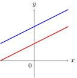
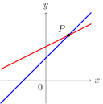
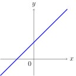

1. Systems of Linear Equations¶
1.1. Linear Equation¶
Generally, we define a linear equation in the n variables \(x_1,x_2,\cdots,x_n\) to be one that can be expressed in the form \(a_1 x_1+a_2 x_2+\cdots+a_n x_n=b\). The terms \(a_1,a_2,\cdots,a_n\) are called coefficients, and \(x_1,x_2,\cdots,x_n\) are called unknowns. If \(b=0\), the linear equation is called homogeneous.
Find all linear equations.
Solution:
The equation (1), (2), (5), and (6) are linear equations.
Note
\(ax+by=c\) represents a straight line in xy plane; \(ax+by+cz=d\) represents a plane in xyz space.
1.2. System of Linear Equations¶
The system of linear equations (sometimes called linear system) consists of one or more linear equations and can be expressed in the form
For example,
is a linear system in two unknowns, and
is a linear system in three unknowns.
1.3. Solutions for Linear Systems¶
Suppose \(x_1=s_1, x_2=s_2,\cdots,x_n=s_n\) (\(s_1,s_2,\cdots,s_n\) are real numbers) make each equation in Eq (1.1) holds true, then the ordered n-tuple \((s_1,s_2,\cdots,s_n)\) is a solution of Eq (1.1). For example, \((1,-2)\) is the solution of Eq (1.2) and \((1,2,-1)\) is a solution of Eq (1.3).
Note
Every system of linear equations has zero, one, or infinitely many solutions. There are no other possibilities.
In general, we say that a linear system is consistent if it has at least one solution and inconsistent if it has no solutions.

Fig. 1.1 No solution

Fig. 1.2 One solution

Fig. 1.3 Infinitely many solutions (coincident lines)
Solve the linear systems
Solution:
We can eliminate \(x\) from the second equation by adding \(-2\) times the first equation to the second. This yields
From the second equation we obtain \(y=1\), and by substituting it in the first equation we obtain \(x=2\). Thus, the system has the unique solution
Solve the linear systems
Solution:
We can eliminate \(x\) from the second equation by adding \(-3\) times the first equation to the second. This yields
The second equation is contradictory, hence this linear system has no solution.
Solve the linear systems
Solution:
We can eliminate \(x\) from the second equation by adding \(-1/2\) times the first equation to the second. This yields
The second equation does not impose any restrictions on \(x\) and hence can be omitted. Thus, the solution of the system are those values of \(x\) that satisfy the equation
Then we obtain can express the solution by two parametric equations
Solve the linear systems
Solution:
This equation can be solved by inspection, since the second and third equations are multiples of the first. Thus, there is only one restriction for \(x\), \(y\) and \(z\)
Then we can obtain the solution in parametric form
1.4. Augmented Matrices and Elementary Row Operations¶
Consider the general form of linear system in Eq (1.1),
if we take all coefficients and constants out and put them in an array, we will have the augmented matrix of this linear system,
For example, the augmented matrix for the system of equations
is
The basic method for solving a linear system is to perform algebraic operations on the system that do not alter the solution set and that produce a succession of increasingly simpler systems, until a point is reached where it can be ascertained whether the system is consistent, and if so, what its solutions are. Typically, the algebraic operations are:
Multiply an equation through by a nonzero constant.
Interchange two equations.
Add a constant times one equation to another.
Since the rows (horizontal lines) of an augmented matrix correspond to the equations in the associated system, these three operations correspond to the following operations on the rows of the augmented matrix:
Multiply a row through by a nonzero constant.
Interchange two rows.
Add a constant times one row to another.
These are called elementary row operations on a matrix.
Use elementary row operations and the augmented matrix to solve the linear system
Solution:
The augmented matrix is
Add \(-2\) times the first row to the second row and add \(-3\) times the first row to the third row yield
Multiply the second row by \(1/2\) yields
Add \(-3\) times the second row to the third row yields
Multiply the third row by \(-2\) yields
Add \(-1\) times the second row to the first yields
Add \(-11/2\) times the third row to the first and \(7/2\) times the third row to the second yield
Thus, the solution is